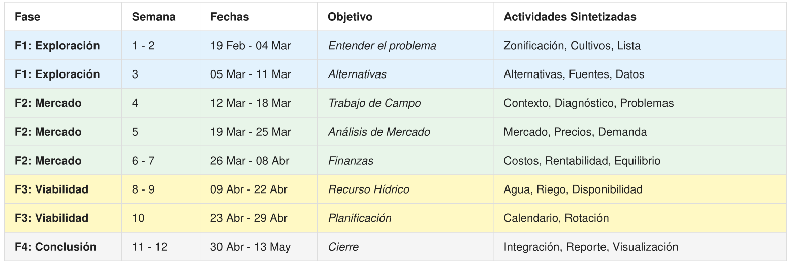

Reconversión de Cultivos en Sonora
Este proyecto, desarrollado por el equipo de Reconversión de Cultivos de la carrera de Ciencias de la Computación de la Universidad de Sonora, tiene como objetivo proponer alternativas viables de reconversión de cultivos para optimizar el uso de los recursos hídricos y aumentar la rentabilidad agrícola frente a la sequía en Sonora.
Análisis y cálculo de evapotranspiración de referencia (ETo) y evapotranspiración del cultivo (ETc) bajo el estándar internacional FAO-56.
Evaluación multicultivo analizando rentabilidad económica física (MXN/m³) frente a consumos de agua para proponer alternativas de menor huella.
Infraestructura en Python implementando OOP y Pydantic, garantizando robustez para modelado de machine learning y analítica.
Metodología del Proyecto
El flujo del proyecto se divide en cuatro fases principales consecutivas:
- Fase 1: Exploración y Diagnóstico: Inmersión y recopilación de datos oficiales (SIAP, CONAGUA, NASA POWER).
- Fase 2: Análisis de Rentabilidad: Evaluación económica y determinación de precios y rentabilidad en mercado.
- Fase 3: Análisis Técnico y Viabilidad: Modelado del cálculo de Huella Hídrica y optimización física.
- Fase 4: Propuesta Sistémica: Recomendaciones del modelo para reconversión agrícola en Sonora.

Metodología de Evapotranspiración y Huella Hídrica
Base matemática del modelo, compilada dinámicamente desde el reporte oficial FAO-56 del proyecto.
Calculadora Interactiva de Huella Hídrica (FAO-56)
Utiliza esta herramienta para simular y calcular el consumo hídrico y la Huella Hídrica (HH Verde y Azul) de un cultivo en base a parámetros diarios promedio.
Parámetros de Entrada
Resultados de Simulación (Estimados)
Inventario de Datos de Sonora
Estructura y detalle de los conjuntos de datos recopilados (Crudos, Procesados y Configuración) utilizados para el análisis de reconversión.
Datos Crudos (data/raw/)
Datos Procesados (data/processed/)
Arquitectura de la Librería `seminario_ia`
Detalle de la jerarquía de directorios del paquete de software desarrollado, sus clases, validaciones con Pydantic y lógica de cálculos.
Modelos de Datos con Pydantic
Se implementan modelos estructurados con validación estricta de tipos para asegurar la consistencia de los datos geográficos e hídricos:
Clase Crop (data_models.py)
Representa las características técnicas y calendarios fenológicos de un cultivo individual:
class Crop(BaseModel):
model_config = ConfigDict(extra="ignore")
name: str # Nombre del cultivo (e.g. "Trigo grano")
start_month: int # Mes de inicio del calendario de siembra
start_day: int # Día de inicio del calendario de siembra
end_month: int # Mes de término (cosecha)
end_day: int # Día de término (cosecha)
kc_ini: float # Coeficiente Kc de etapa inicial
kc_mid: float # Coeficiente Kc de etapa media
kc_end: float # Coeficiente Kc de etapa final
durations: tuple[int, int, int, int] # Duración por etapas en díasClase Region (data_models.py)
Representa un área geográfica (municipio) y contiene sus coordenadas, altitud y los cultivos activos cargados dinámicamente:
class Region(BaseModel):
model_config = ConfigDict(extra="ignore")
name: str # Nombre de la región (municipio)
latitude: float # Latitud en grados decimales
longitude: float # Longitud en grados decimales
altitude: float # Altitud en metros sobre el nivel del mar
crops: list[Crop] = [] # Lista de cultivos asociados a la región
def add_crop(self, crop: Crop) -> None:
"""Agrega un cultivo a la región geográfica."""
self.crops.append(crop)Análisis Estadístico y Eficiencia Hídrica
Resultados del análisis multivariable del agua y rentabilidad en Sonora (periodo 2010-2024).